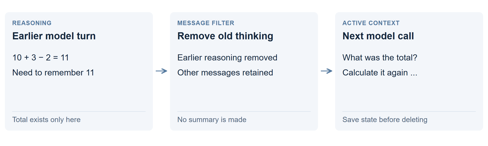

Remove earlier thinking
Stop sending the model’s earlier reasoning back on every call. This frees space when the reasoning is no longer useful. It does not turn off reasoning for the current answer.

What gets removed?
A model may first work through a calculation, then issue a command or answer. Later calls can include both that earlier reasoning and the result. This approach removes the earlier reasoning while retaining the other messages.
If “apples: 11” was saved in an explicit state table, the next call can use it. If the total lived only inside the removed reasoning, the model must calculate it again.
How is it different from a summary?
A summary tries to preserve useful facts before replacing history. This is a blanket removal by message type. It is simpler, but does not check whether an essential fact was stored there.
What happened in the test?
| Trial | Correct | Time |
|---|---|---|
| 121K ledger | No answer | stopped at 2.6 h |
The agent repeatedly reconstructed its state, hit its output limit and failed to act. It generated about 397K tokens before the run was stopped.
When can it help?
Use it when durable facts, progress and next steps live in a separate visible state or file. The revised self-editing agent uses that arrangement. Removing reasoning alone did not provide it.
Technical details: size reduction is not a speed result
Across 277 calls in a separate initial comparison, old reasoning was a median 9.9% of input, with a maximum of 55.8%. Those percentages measure occupied space, not the speed gained by deleting it.
The experiment stripped previous reasoning from the message history and disabled its preservation in the chat template. Current-call thinking remained enabled. Reformatting earlier messages can also reduce prefix reuse.